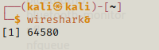

TCP vs UDP Protocols
TCP & UDP are the transport protocols of the OSI Model using the Layer 4 protocol.
TCP - Transport Control Protocol- Is a connection orientated protocol
- Is best suited for high reliability connections
- Websites using HTTP / HTTPS
- Using SSH / file sharing protocol
UDP - User Datagram Protocol- Suited for connectoinless protocols
- Streaming services
- Using DNS
- Voice over IP
We use TCP & UDP to scan as a penetration tester.
TCP is the most common protocol used to scan for exploits.
3-Way Handshake
The TCP protocol uses a method called the 3-Way Handshake to communicate through ports (which is an item that can be opened in a machine).
If we were interacting with a HTTP website the port would be 80, if the website was HTTPS the port would be 443.
How the 3-Way Handshake works:
synchronisation (SYN) > synchronisation acknowledgment (SYN ACK) > acknowledgement (ACK)
- Send a synchronisation packet to target
- The packet is recieved; target sends us back a synchronisation acknowledgment packet
- An acknowledgement packet is sent back to the target, allowing access.
Example:
greet friend (SYN) > friend greets you back (SYN ACK) > you begin converstaion (ACK)
There are many different protocols with over 65,000 ports that can use them!
Using Wireshark
Wireshark is used to capture packets. To do this it listens to the computer's NIC (Network Interface Card) to capture the data.
This should be already installed in your Kali Linux, simply run in your terminal:
wireshark&

This will cause another window to open which will be the Wireshark app.

To run a scan to capture packets we click the Start capturing packets button.

Now open your web browser then return back to the Wireshark app. You will now see all the socket data gathered between the web browser and my machine.

We can scroll through the logs and will find the 3-Way Handshake connection between the website and my machine.
Synchronisation SYN packet

Synchronisation Acknowledgment SYN ACK packet

Acknowledgment ACK packet

The terminal will also inform us when the capture has started and stopped.

REMEMBER !!
- TCP is a connection orientated protocol, suited for high realiability connections
- UDP is a connectionless protocol.
- TCP uses the 3-Way Handshake (SYN, SYN ACK, ACK packets)
- TCP & UDP use Layer 4 protocol